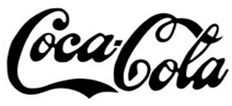
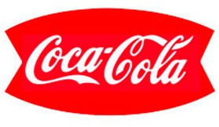
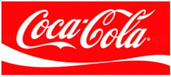
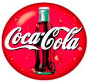
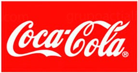
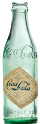
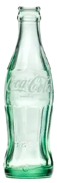
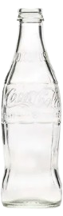
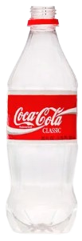
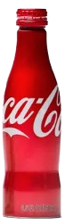

|
EVOLUCION DE COCA COLA |
||||
|---|---|---|---|---|
|
Año 1900 |
Año 1950 |
Año 1969 |
Año 1993 |
Año 2007 |
|  |  |  |  |  |
|
Coca-Cola aún se vendía en farmacias como un tónico refrescante. La bebida se comercializaba en botellas de vidrio de contorno recto y su popularidad comenzaba a crecer en EE.UU. |
Con la expansión global, Coca-Cola se convirtió en un ícono del consumismo. Apareció por primera vez en comerciales de televisión, y la clásica botella contorneada se hizo aún más reconocida. |
Se introdujo el famoso logotipo de la ola (Dynamic Ribbon), dándole un aspecto moderno y dinámico. La marca reforzó su identidad con campañas emocionales como "It's the Real Thing". |
Aparecen los icónicos osos polares en la publicidad de Coca-Cola, convirtiéndose en un símbolo de la marca. Se lanza la campaña "Always Coca-Cola", consolidando su conexión con la felicidad. |
Coca-Cola refuerza su compromiso con la sostenibilidad, lanzando campañas ecológicas y reduciendo el impacto ambiental de sus envases. Se introduce la "PlantBottle", una botella parcialmente hecha con materiales reciclados. |
|  |  |  |  |  |